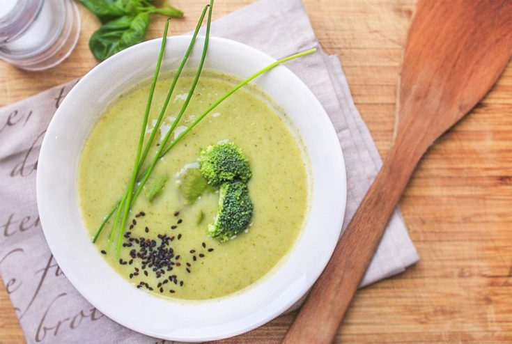

BROCOLLI SOUP

A creamy and comforting broccoli soup
garnished with fresh herbs.
garnished with fresh herbs.
Description
A comforting blend of sautéed onions, tender broccoli, and flavorful herbs.
It's a nutritious option, packed with vitamins
and minerals, perfect for a hearty meal.
Creamy and smooth in texture, it offers a delightful balance of flavors.
Enjoy it on its own or pair it with a crusty bread for a satisfying and wholesome experience.
Ideal for chilly days,
this soup provides warmth
and nourishment.
Indulge in the goodness of broccoli while savoring the comforting essence of this delightful soup.
Ingredients
- 2 cups broccoli florets
- 1 medium onion, diced
- 2 cloves garlic, minced
- 3 cups vegetable or chicken broth
- 1 cup milk or cream
- Salt and pepper to taste
- Olive oil for cooking
- Optional toppings: grated cheese, croutons, or fresh herbs
Steps
- Heat olive oil in a large pot over medium heat. Add diced onions and minced garlic. Sauté until onions become translucent and garlic is fragrant.
- Add the broccoli florets to the pot and stir for a few minutes until they start to soften slightly.
- Pour in the vegetable or chicken broth, ensuring the broccoli is fully covered. Increase the heat and bring the mixture to a boil.
- Reduce the heat to medium-low and simmer for about 15-20 minutes or until the broccoli is tender and easily mashed with a fork.
-
Using an immersion blender or regular blender, carefully puree the soup until smooth and creamy.
If using a regular blender, blend in batches and be cautious of the hot liquid. - Return the soup to the pot and stir in the milk or cream. Heat the soup gently over low heat, stirring occasionally, until it's heated through.
- eason with salt and pepper according to your taste preferences. Adjust the consistency by adding more broth or milk if desired.
- Ladle the hot soup into bowls and garnish with optional toppings like grated cheese, croutons, or fresh herbs.
- Serve the broccoli soup immediately and enjoy its comforting flavors.